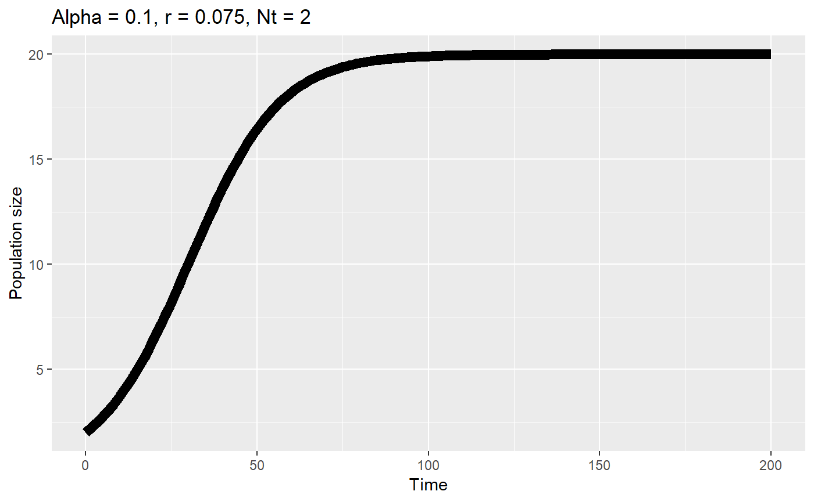
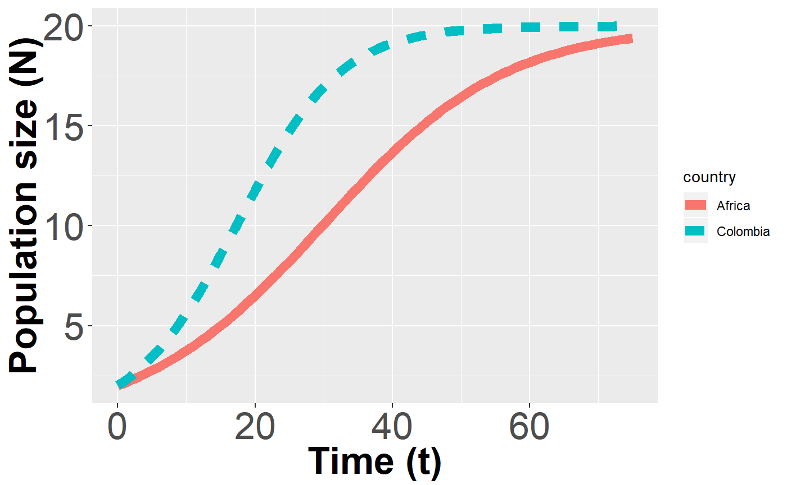
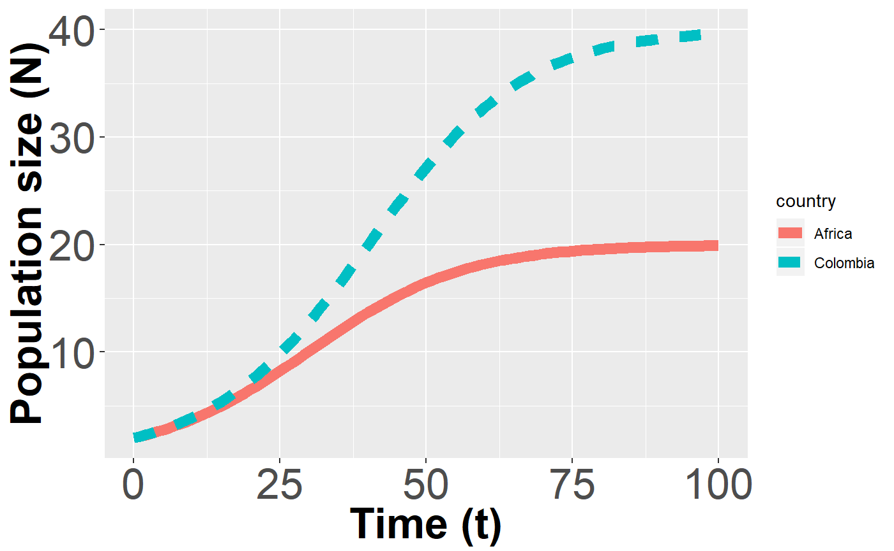
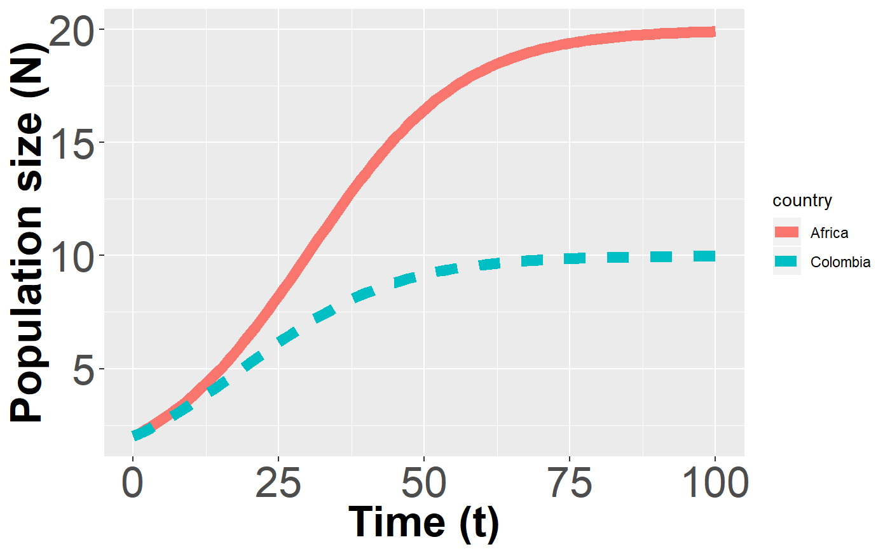
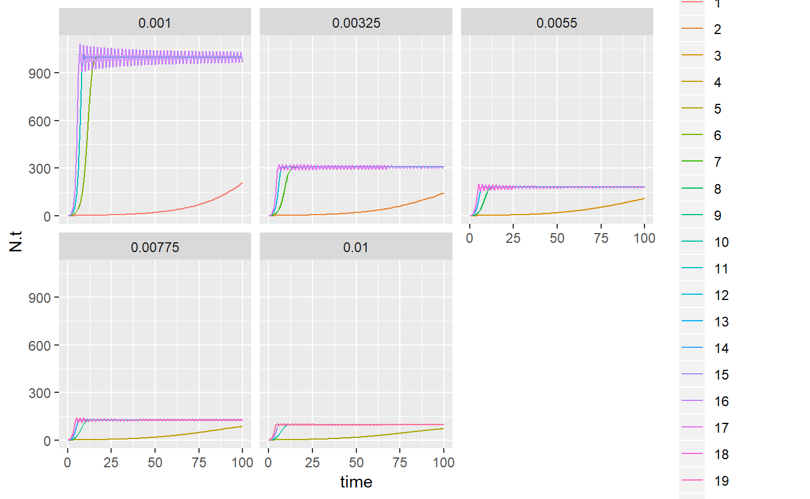

hippos.Rmdlibrary(ggplot2)
#> Warning: package 'ggplot2' was built under R version 3.5.1
library(popcycles)(40/3)^(1/20)
#> [1] 1.138274alpha <- 0.1
r <- 0.075
K = 20
hippos.africa <- logit_discrete_multistep(alpha = NULL,
K = K,
r.d = r,
time.steps = 200,
Nt = 2)
hippos.africa$country <- "Africa"
ti <- paste("Alpha = ",alpha,", r = ",r,", Nt = 2", sep = "")
mx <- max(hippos.africa$N.t) + max(hippos.africa$N.t)*0.05
axis.txt.sz<-25
axis.ti.sz<-25
title.sz <- 30
ggplot(aes(y = N.t,
x = time),
data = hippos.africa) +
#geom_point(size = 4) +
geom_line(size = 3) +
xlab("Time") +
ylab("Population size") +
#ylim(0,20) +
ggtitle(ti)
hippos.earlier.repro <- logit_discrete_multistep(alpha = NULL,
K = K,
r.d = r*1.75,
time.steps = 200,
Nt = 2)
hippos.earlier.repro$country <- "Colombia"hippos.earlier.repro2 <- rbind(hippos.earlier.repro,
hippos.africa)ggplot(aes(y = N.t,
x = time),
data = hippos.earlier.repro2) +
#geom_point(size = 4) +
geom_line(size = 3,
aes(color =country ,
linetype = country)) +
xlab("Time (t)") +
ylab("Population size (N)") +
theme(axis.text=element_text(size=axis.txt.sz),
axis.title=element_text(size=axis.ti.sz,face="bold")) +
theme(plot.title = element_text(size=title.sz)) +
#ggtitle(title) +
xlim(0,75)
#> Warning: Removed 250 rows containing missing values (geom_path).
hippos.higher.K <- logit_discrete_multistep(alpha = NULL,
K = K*2,
r.d = r,
time.steps = 200,
Nt = 2)
hippos.higher.K$country <- "Colombia"hippos.higher.K2 <- rbind(hippos.higher.K,
hippos.africa)
ggplot(aes(y = N.t,
x = time),
data = hippos.higher.K2) +
#geom_point(size = 4) +
geom_line(size = 3,
aes(color =country ,
linetype = country)) +
xlab("Time (t)") +
ylab("Population size (N)") +
theme(axis.text=element_text(size=axis.txt.sz),
axis.title=element_text(size=axis.ti.sz,face="bold")) +
theme(plot.title = element_text(size=title.sz)) +
#ggtitle(title) +
xlim(0,100)
#> Warning: Removed 200 rows containing missing values (geom_path).
hippos.lower.K <- logit_discrete_multistep(alpha = NULL,
K = K*(1/2),
r.d = r,
time.steps = 200,
Nt = 2)
hippos.lower.K$country <- "Colombia"hippos.lower.K2 <- rbind(hippos.lower.K,
hippos.africa)ggplot(aes(y = N.t,
x = time),
data = hippos.lower.K2) +
#geom_point(size = 4) +
geom_line(size = 3,
aes(color =country ,
linetype = country)) +
xlab("Time (t)") +
ylab("Population size (N)") +
theme(axis.text=element_text(size=axis.txt.sz),
axis.title=element_text(size=axis.ti.sz,face="bold")) +
theme(plot.title = element_text(size=title.sz)) +
#ggtitle(title) +
xlim(0,100)
#> Warning: Removed 200 rows containing missing values (geom_path).
If I tell you how big a population is now, what information would you need to predict how bit it is next year? -survival -reproduction
How would you calculate it? Nt1 = Nt0phi + Nt0Fec Nt1 = Nt0(Phi + Fec) Nt1 = Nt0Lambda … Nt1 = Nt0(1 + r.d) N.t+1 = Nt + r.d*N.t
Why does it slow down?
A
pops <- expand.grid(alpha = seq(from = 0.001,to = 0.01,length.out = 5),
r.d = seq(from = 0.05,to = 2,length.out = 4))
pops$Nt <- 2
pops$time.steps <- 100
list.out <- as.list(1:nrow(pops))
for(i in 1:nrow(pops)){
df.out <- logit_discrete_multistep(alpha = pops[i,"alpha"],
r.d = pops[i,"r.d"],
time.steps = pops[i,"time.steps"],
Nt = pops[i,"Nt"])
df.out$iteration <- i
list.out[[i]] <- df.out
}
df.out <- do.call(rbind,list.out)ggplot(data = df.out,
aes(y = N.t,
x = time)) +
geom_line(aes(color = factor(iteration))) +
facet_wrap(~alpha)
26-28 hippos
“Pablo Escobar’s hippos: A growing problem” William Kremer 26 June 2014 https://www.bbc.com/news/magazine-27905743 “In the early 1980s, after Escobar had become rich but before he had started the campaign of assassinations and bombings that was to almost tear Colombia apart, he built himself a zoo.
He smuggled in elephants, giraffes and other exotic animals, among them four hippos - three females and one male.
When Hacienda Napoles was confiscated in the early 1990s, Escobar’s menagerie was dispersed to zoos around the country. But not the hippos. For about two decades, they have wallowed in their soupy lake, watching the 20sq km (8 sq mile) park around them become neglected and overgrown - and then transformed back into a zoo and theme park, complete with water slides. All the while, the hippos themselves thrived, and multiplied."
Nobody knows how many there are. The local environmental authority, which bears responsibility for them, estimates between 50 and 60, with most living in the lake at the park. But 12 are known to have paddled past the flimsy fence and into the nearby Magdalena River - and maybe many more.
Here, conditions for hippos are idyllic. The river is slow moving and has plenty of shallows, perfect for larger animals which don’t actually swim but push themselves off banks, gliding through the water. Moreover, the region never experiences drought, which tends to act as a natural brake on the size of herds in Africa.
How much the hippos like Colombia can be judged from how much sex they are having. In Africa they usually become sexually active between the ages of seven and nine for males, and nine and 11 for females, but Pablo Escobar’s hippos are becoming sexually active as young as three. All the fertile females are reported to be giving birth to a calf every year.